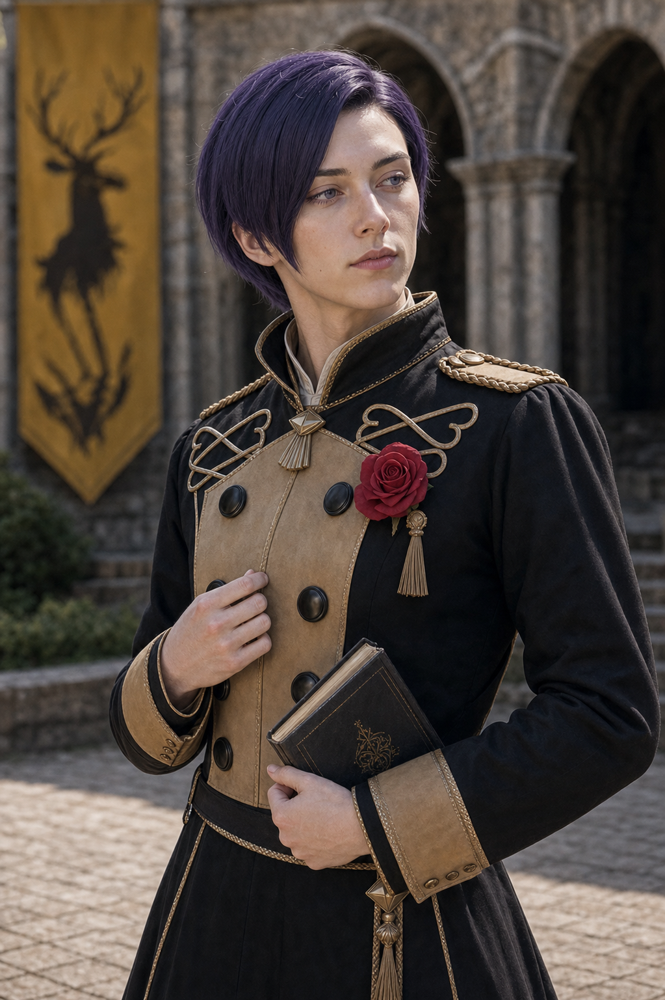
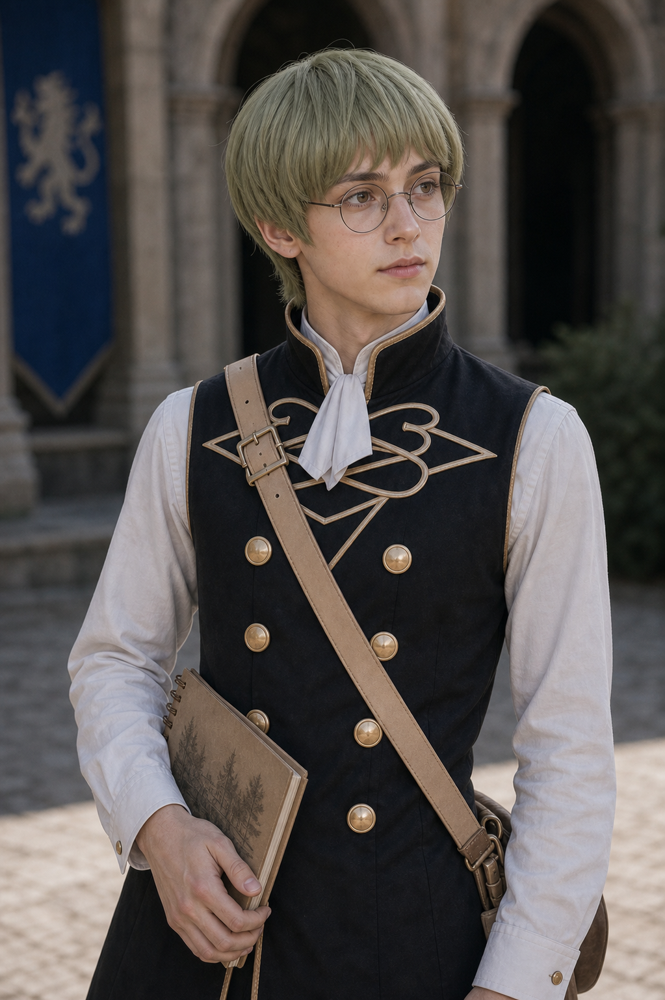

Shot027B keyframe
qa_passed / P1
episodes/EP02/generated/mock_battle_production_keyframes_2026-07-17/Shot027B_keyframe.png
qa_passed / P1
episodes/EP02/generated/mock_battle_production_keyframes_2026-07-17/Shot027B_keyframe.png
ash-gray-haired archer, observation high point and suppression shots
assets/characters/blue_lions/Ashe/academy/selected.png
petite peach-orange-haired 18-year-old mage, nervous-to-stable wind magic
assets/characters/blue_lions/Annette/academy/selected.png
gentle blonde 18-year-old healer, soft but decisive rear-line support
assets/characters/blue_lions/Mercedes/academy/selected.png
Black Eagles mage, elegant academy support movement
assets/characters/black_eagles/Dorothea/academy/selected.png
purple-haired noble, formal posture, center-west first wave
assets/characters/golden_deer/Lorenz/academy/selected.png
glasses-wearing archer, cautious ranged support
assets/characters/golden_deer/Ignatz/academy/selected.pngEstablish the exact geography for First Moving Enemy Wave: Dorothea, Lorenz and Ignatz move through center-west lane while Ashe and support line hold high ground behind low walls.
episodes/EP02/generated/mock_battle_production_keyframes_2026-07-17/Shot027B_A_keyframe.png
Show the tactical peak with Ashe, Annette, Mercedes, Dorothea, Lorenz using their locked character assets and academy costumes.
episodes/EP02/generated/mock_battle_production_keyframes_2026-07-17/Shot027B_B_keyframe.png
End on the reaction or reposition that motivates the next shot while preserving screen direction.
episodes/EP02/generated/mock_battle_production_keyframes_2026-07-17/Shot027B_C_keyframe.png